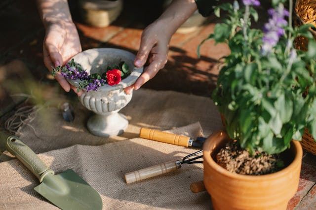

Sustainability
At Sprout & Grow, sustainability is at the core of everything we do. We are deeply committed to protecting the environment by prioritizing eco-friendly gardening practices. Our plants are grown using organic methods that nourish the soil, avoid harmful pesticides, and promote biodiversity. We carefully select plants that thrive in our local climate, reducing the need for excessive water, fertilizers, or harmful chemicals.
Innovation
Innovation drives our approach to gardening. At Sprout & Grow, we are constantly exploring new ideas and techniques to improve the gardening experience for our customers. From introducing new plant varieties to experimenting with vertical gardening solutions for urban dwellers, we seek innovative ways to make gardening more accessible and efficient.

